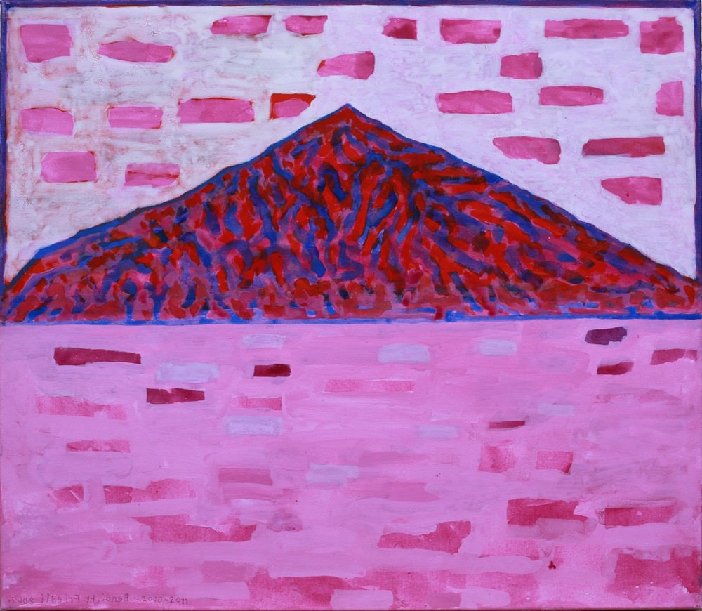

Saison 2019
Kammermusikkonzerte Hondrich
Fünf Klassische Konzerte im grossen Saal des Inforama Hondrich

(Niesen, Benedicht Friedli, 2010⁄11)
Liebes Publikum!
Die Kammermusikreihe startet in einem frischen, farbigen Kleid in ihre 23. Saison. Das neu gestaltete Programmheft liefert Ihnen in Wort und Bild Wissenswertes über die Interpreten und die erklingende Musik der fünf bevorstehenden Konzerte. So können Sie sich schon zu Beginn der Saison auf Ihren Besuch in Hondrich einstimmen und freuen.
Auch unser Leitungsteam setzt sich neu zusammen. Katharina Wäfler zieht sich - nach 22 aktiven Jahren - aus der Organisation der Konzerte zurück. Wir danken ihr von Herzen für ihr immenses Engagement seit Beginn der Konzertreihe: Für ihre Idee, in der „Bergbauernschule“ klassische Konzerte zu organisieren, für die Rechnungsführung, für ihre grosszügige Gastfreundschaft und die immerwährende herzliche Präsenz. Wir wünschen ihr alles Gute und hoffen, sie bei allen weiteren Konzerten bei uns zu haben!
Neu unterstützt uns Bernhard Berger, ehemaliger Leiter des Inforamas Berner Oberland, bei der Rechnung.
Und was erwartet Sie nun in dieser Saison? Das Salonquintett I Galanti spielt am ersten Wochenende des neuen Jahres die beiden beschwingten Neujahrskonzerte. Eine Reservation empfiehlt sich bei den beliebten Konzerten. Im Februar tritt das junge Ensemble TANGO SALÓN zum ersten Mal in Hondrich auf. Wir freuen uns und sind gespannt darauf, den Tango wieder einmal in der originalen Besetzung mit Bandoneon zu hören.
Im März treten die Schwestern Kristina und Evelyn Brunner aus Thun bei uns auf. Sie haben sich ein einzigartiges Konzertrepertoire aus traditioneller Schweizer Volksmusik, verschmolzen mit eigenen Kompositionen und Musik aus den Weiten Europas erarbeitet.
Das letzte Konzert der Saison im Mai ist ganz der romantischen Kammermusik gewidmet. Er erklingen zwei selten gespielte Werke: Dvořáks Quintett op. 70 ist wegen der speziellen Besetzung mit Kontrabass eine Rarität. Mit Louise Farrencs virtuosem 2. Klavierquintett beenden wir die Saison fulminant.
Wir danken Ihnen für Ihr Interesse an den Konzerten in Hondrich und freuen uns auf ein Wiedersehen im 2019!
Bern, im November 2018 Bettina Keller, Franziska Grütter, Bernhard Berger